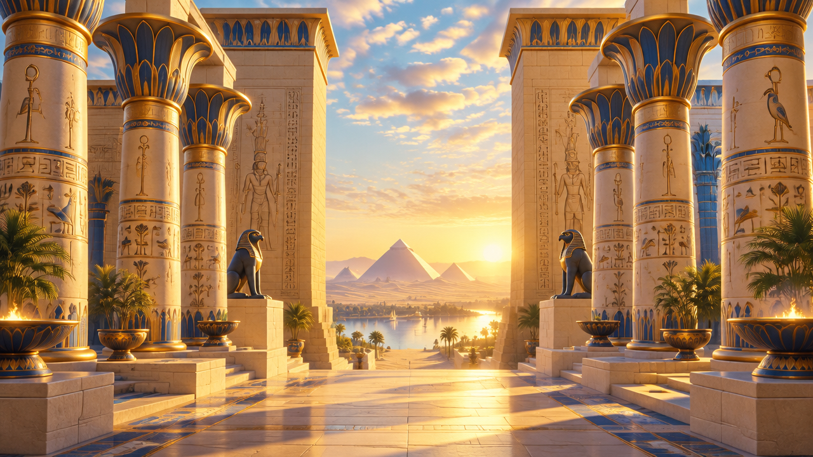

أحمس
محرر مصر من الهكسوس
حاصر الهكسوس في منف وأواريس وطردهم خارج حدود مصر، فأنهى الاحتلال ووحّد الدولة.
اقرأ دروس المنهج، العب التحديات، واسأل المساعد الذكي عن أي جزء غير واضح. كل شيء مبني على محتوى كتابك المقرر، خطوة بخطوة.

تقدمك يُحفظ على جهازك، وسجّل الدخول لمزامنته مع حسابك على أي جهاز.
تسجيل الدخولاختر نشاطًا وابدأ اللعب. كل نشاط يعتمد على محتوى المنهج ويعطيك شرحًا للإجابة.
أسئلة من المنهج وشرح فوري
أجب عن أسئلة من دروس المنهج، واعرف سبب الإجابة الصحيحة بعد كل سؤال.
ابدأ الآنخمّن الشخصية من الأدلة
اقرأ الأدلة واحدًا بعد الآخر، وكلما أسرعت في التعرف على الشخصية زادت نقاطك.
ابدأ الآنرتّب الأحداث بالترتيب الصحيح
اضغط الأحداث بالترتيب الزمني من الأقدم إلى الأحدث، واحذر من الخطأ.
ابدأ الآنحل الألغاز من المنهج
ألغاز تعتمد على أحداث المنهج، مع تلميحات تدريجية تساعدك على الوصول للحل.
ابدأ الآناسأل وافهم ببساطة
مساعد يتحدث العربية ويشرح أجزاء المنهج الصعبة بأسلوب مبسط وأمثلة واضحة.
ابدأ الآنالتاريخ ليس تواريخ فقط، بل مواقف صنعها أشخاص. تعلّمها من خلال لعبة «من أنا؟».
محرر مصر من الهكسوس
حاصر الهكسوس في منف وأواريس وطردهم خارج حدود مصر، فأنهى الاحتلال ووحّد الدولة.
قائد الثورة العرابية
رفعت ثورته شعار «مصر للمصريين»، فتقرّب الجيش من الشعب وظهر مفهوم السيادة الوطنية.
زعيم الحركة الوطنية
أسس جريدة اللواء والحزب الوطني، واستغل حادثة دنشواي للتنديد بالاحتلال، ودعا للجامعة المصرية.
قائد ثورة 1919
حوّل المطالب السياسية إلى حركة شعبية منظمة، وأكد أن الاستقلال قضية أمة بأكملها.
ثلاث خطوات بسيطة تجعل المراجعة أسرع وأمتع.
شرح مبسط لكل درس مع التواريخ والشخصيات والأسباب والنتائج.
أسئلة وألغاز من نفس الدرس، مع شرح الإجابة الصحيحة فورًا.
اجمع النقاط والإنجازات، وشاهد ما أنجزته في صفحة تقدمي.
ابدأ بأول درس في المنهج، ثم اختبر نفسك في التحديات. كل خطوة تضيف نقاطًا إلى رصيدك.